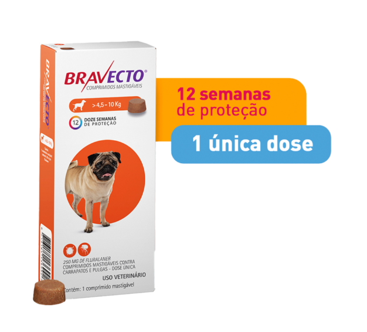
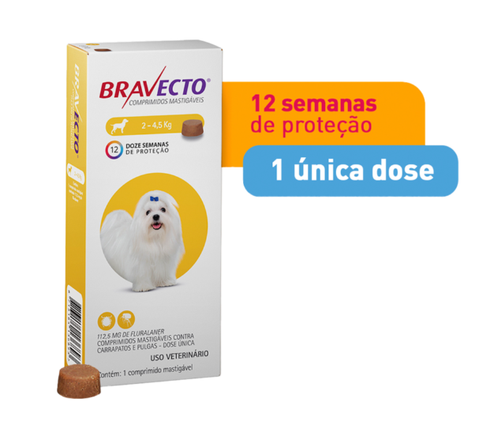
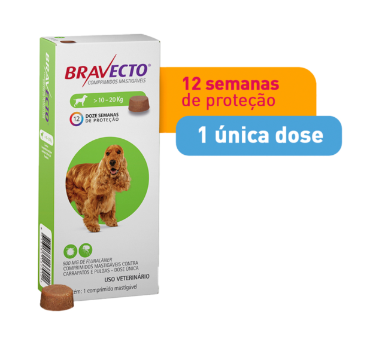
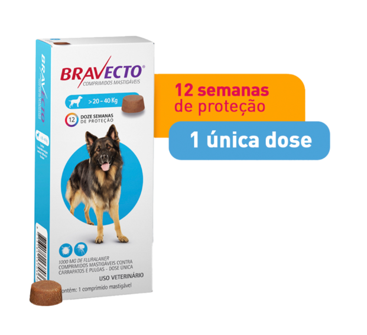
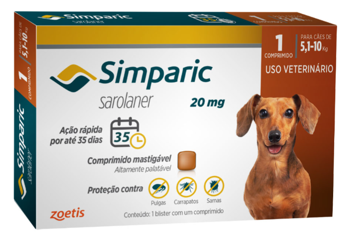
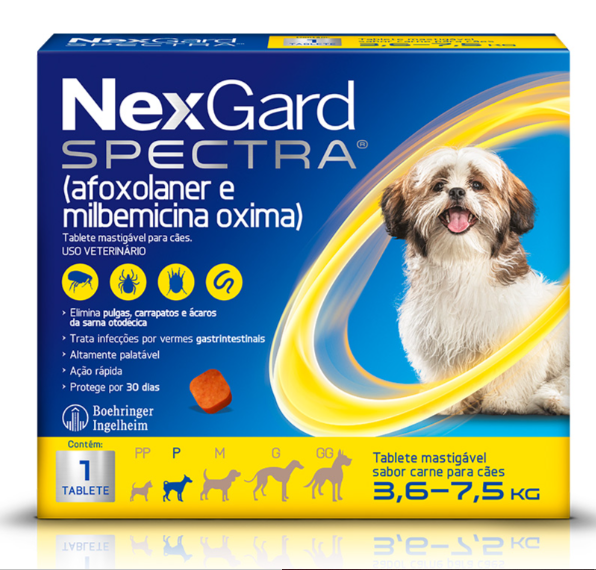
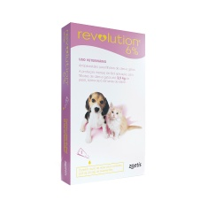
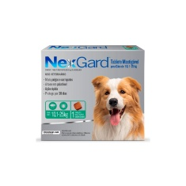
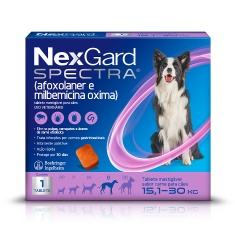

*imagens meramente ilustrativas
Antipulgas e Carrapatos Bravecto MSD para Cães de 4,5 a 10 kg
Em estoque
40% OFF
R$ 143,39
R$ 238,99
R$ 143,39 para assinantes
Antipulgas em destaques

Antipulgas e Carrapatos Bravecto para Cães até 4,5kg
R$ 118,79

Antipulgas e Carrapatos Bravecto MSD para Cães de 10 a 20kg
R$ 174,90

Antipulgas e Carrapatos Bravecto MSD para Cães de 20 a 40kg
R$ 193,79

Antipulgas Simparic 20 mg para cães 5,1 a 10 kg - Zoetis
R$ 83,24

Antipulgas e Carrapatos NexGard Spectra para Cães de 3,6 a 7,5kg
R$ 75,23

Revolution Zoetis 6% 0.25ml para Filhotes de Cães e Gatos de até 2,5kg
R$ 77,00

Antipulgas e Carrapatos NexGard para Cães de 10,1 a 25kg
R$ 82,54

Antipulgas e Carrapatos NexGard Spectra para Cães de 15,1 a 30kg
R$ 102,04
Descrição
-
- - Indicado para cães;
- - Acaba com a infestação de carrapatos e pulgas;
- - Rápida ação;
- - Efeito prolongado por 12 semanas;
- - Comprimidos mastigáveis,
- - Disponível em embalagem com 1 comprimido de 250 mg.
Patinhas Felizes ensina
- Durante os passeios ou até em casa, os cães podem ser expostos a pulgas e carrapatos. O Bravecto 4,5 a 10 kg é uma solução eficaz para livrar seus amigos com patas desses parasitas indesejados.
- O Bravecto para carrapato e pulga age para combater esses parasitas, que podem causar desconforto e problemas de saúde. Além disso, o medicamento oferece benefícios como:
- - Ação rápida;
- - Efeito prolongado por 12 semanas;
- - Comprimidos mastigáveis.
- O Bravecto é uma excelente opção não só para eliminar, mas também para prevenir pulgas e carrapatos nos cães. Assim, ele ajuda a manter a saúde e o bem-estar dos animais. Quer saber mais? Continue a leitura!
Bravecto 4,5 a 10 kg: Especificações
| Idade | Filhote, Sênior e Adulto |
|---|---|
| Pet | Cachorros |
| Porte de Raça | Pequeno |
| Uso | Oral |
| Tipo | Antipulgas e carrapatos |
| Apresentação | Embalagem com 1 comprimido mastigável de 250 mg |
| Composição | Cada 1 g contém: 136,4 mg de fluralaner e 1 g de excipiente q.s.p |
| Indicação | Prevenção e tratamento de pulgas e carrapatos em cães com mais de 8 semanas de vida |